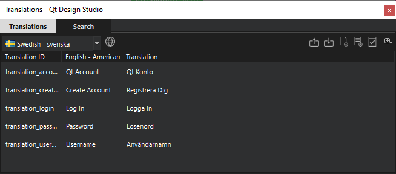
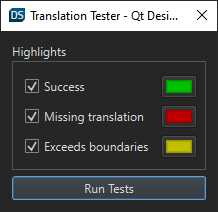
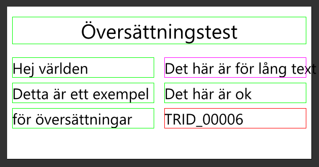

Translations
The Translations view is included in the Qt Design Studio Enterprise license.
You handle translations and multi-language support in the Translations view.

Summary of Translations View Buttons
The Translations view contains the following buttons.
| Button | Function | Read More |
|---|---|---|
| Select which languages you want your project to support. | ||
| Export all your translations to a JSON file. | Importing and Exporting Translations | |
| Import translations from a JSON file. | Importing and Exporting Translations | |
| Generate Qt compiled translation source files (.qm) and Qt translation source files (.ts). | Generating Qt Translation Source Files | |
| Run translation test for several documents and create a test report. | Running Translation Test for Several Documents | |
| Run translation test for the currently open document. This test shows translation warnings in the 2D view and creates a test report. | Running Translation Test for a Single Document | |
| Export all translations used in your project or all translations currently visible in your UI. | Exporting Translations in Other Ways |
Importing and Exporting Translations
You can import and export translations using JSON files.
Below is an example of a JSON translation file:
{
"translatables": [
{
"trId": "translation_password",
"translations": [
{
"language": "en",
"translation": "Password"
},
{
"language": "fi",
"translation": "Salasana"
}
]
}
]
}
Importing Translations
To import a JSON translation file to your Qt Design Studio project:
- In the Translation view in Qt Design Studio, select and open the JSON file.
Matching qsTrId text strings are translated. For example, if you have specified the following translation ID in the JSON file:
"trId": "translation_password", "translations": [ { "language": "en", "translation": "Password" }, { "language": "fi", "translation": "Salasana" } ]
the translation applies to all qsTrId strings with that translation ID in your project.
Generating Qt Translation Source Files
You need to generate Qt compiled translation source files (.qm) and Qt translation source files (.ts) for your project to have the translations working in the actual application and live preview.
To generate these files, select in the Translations view. The files are generated in <project-folder>/i18n.
Running Translation Test for a Single Document
You can run the translation test to find missing translations and translations where the text exceeds the text element boundaries. Running the test is a quick way to check the translations in the document you have open in the 2D view as it highlights errors in the UI.
To run the test for the currently open document:
- In the Translations view, select .
- Select the tests to run and the highlight color for each test:
- Success highlights translations without any warnings.
- Missing translation highlights translations that are missing for one or more languages.
- Exceeds boundaries highlights translations where the text is too long to fit in the text object.

- Select Run Tests.
When the test has completed, you can see the test result highlights in the 2D view.

If the test finds an error, it is highlighted for all languages. For example, if a translation is missing for Swedish, it is also highlighted as missing when you view any other language.
Running the QML language test generates a report in JSON format. This report is generated in the project root folder with the name translation_report_<ui-file-name>.json.
Example of QML language test report:
{
"components": [
{
"componentPath": "C:/project-directory/content/Screen01.ui.qml",
"errors": [
{
"column": 15,
"errorType": "Exceeds",
"line": 45
},
{
"column": 15,
"errorType": "Missing translation",
"line": 59
}
]
}
]
}
The report shows the type of error as well as line and column of the affected text element in the ui.qml file.
Running Translation Test for Several Documents
You can run the project translation test on several .ui.qml files at the same time. Qt Design Studio runs the same tests as during the Translation Test and generates the same test reports but does not highlight errors in the UI.
To run the translation test for several documents:
- Select in the Translations view.
- Select the files that you want to include in the test.
- Select Run Tests.
Exporting Translations in Other Ways
Select in the Translations view, for alternative ways to export translations:
- Export used translations to JSON exports all translations from the translation database that are currently in use in your project.
- Export current documents translations to JSON exports all translations from the currently open documents in your project.